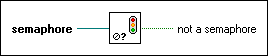

Not A Semaphore VI
Owning Palette: Semaphore VIs
Requires: Base Development System
Returns TRUE if semaphore is not a valid semaphore refnum.
Use this VI in conjunction with the other Semaphore VIs to implement a semaphore in LabVIEW.

 Add to the block diagram Add to the block diagram |
 Find on the palette Find on the palette |